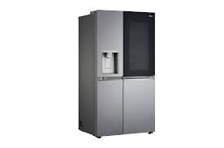
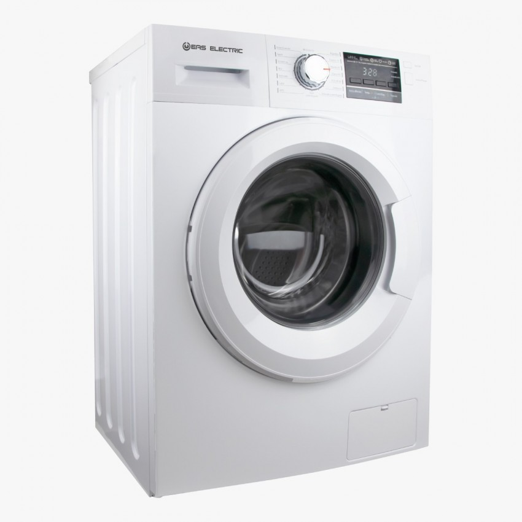
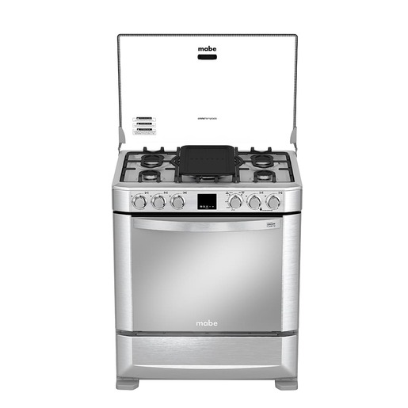
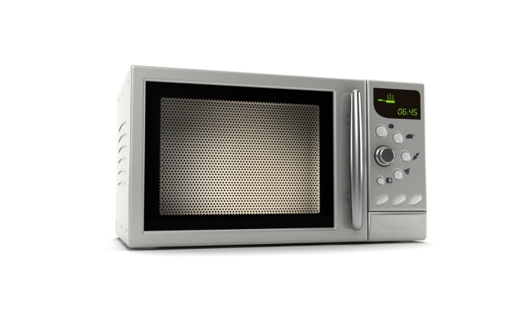
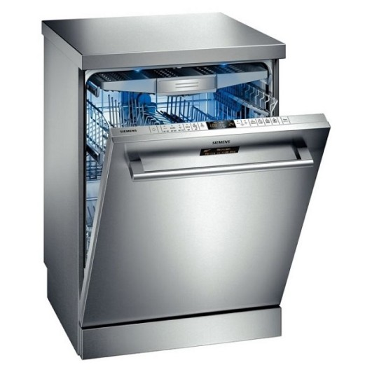

Servicios de Reparación de Electrodomésticos

Refrigeradores
Ofrecemos reparación de refrigeradores, incluyendo problemas de enfriamiento, fugas de agua, y fallas en el sistema de descongelación.

Lavadoras
Nuestros técnicos especializados arreglan lavadoras que no encienden, problemas con el ciclo de lavado, y fugas de agua.

Cocinas
Reparación de cocinas eléctricas y a gas, incluyendo problemas con los quemadores, el horno, y fallas en los controles.

Microondas
Reparamos microondas que no calientan, problemas con el panel de control, y fallas en el sistema de encendido.

Lavavajillas
Servicios de reparación para lavavajillas que no limpian adecuadamente, problemas con el drenaje, y fallas en el sistema de control.